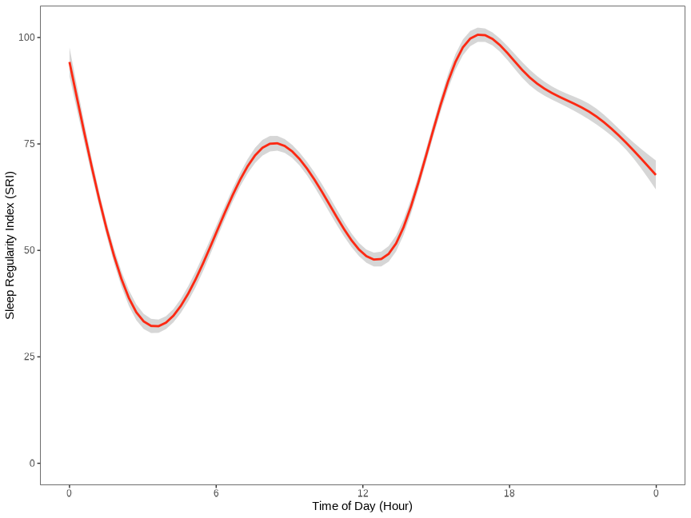
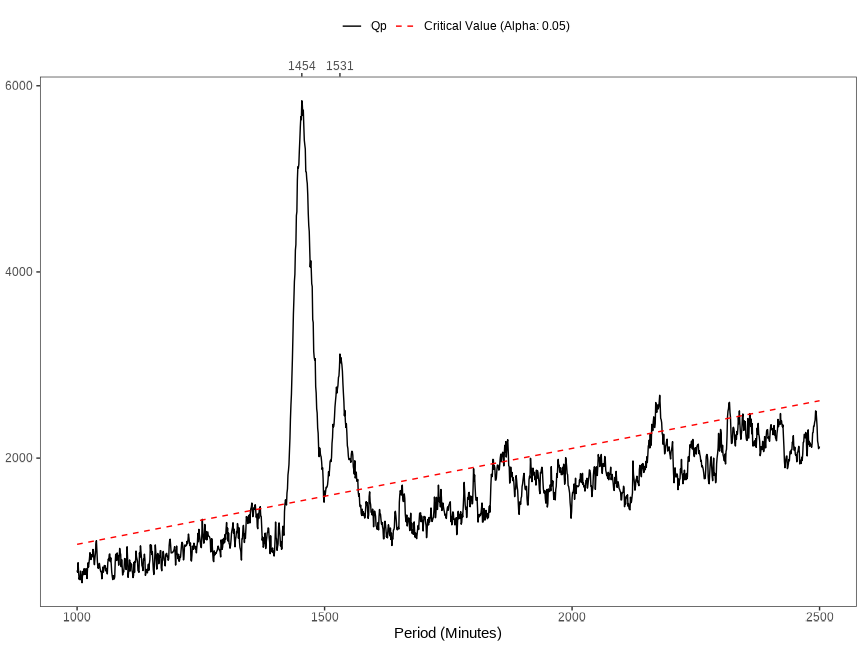
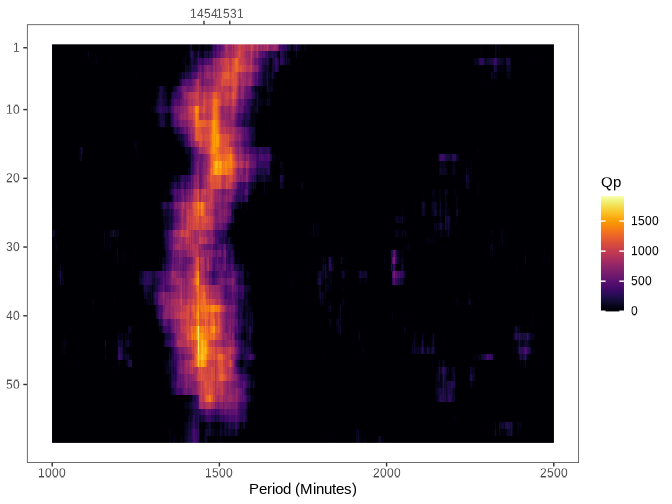
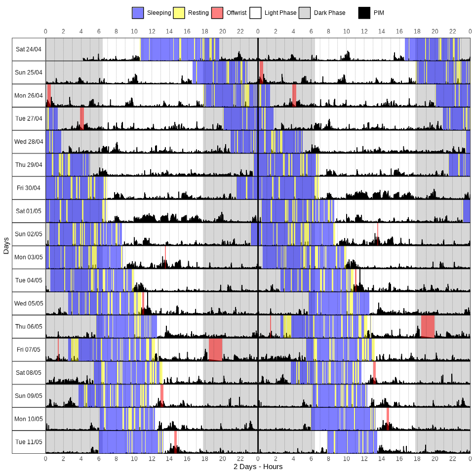
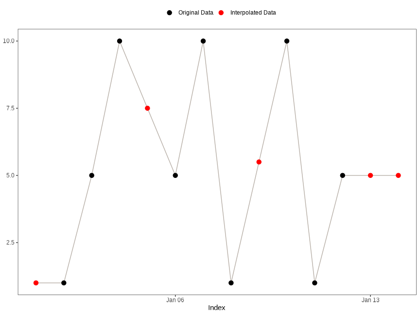

Overview
actverse is an R package that offers a comprehensive toolkit for processing, analyzing, and visualizing actigraphy data. It is designed to support sleep and chronobiology researchers by streamlining workflows and enhancing reproducibility in actigraphy research.
The package is built on tidyverse principles and integrates seamlessly with the tidyverse ecosystem, ensuring a consistent and user-friendly experience for data manipulation and analysis.
If you find this project useful, please consider giving it a star!

The continuous development of
actversedepends on community support. If you find this project useful, and can afford to do so, please consider becoming a sponsor.

Installation
You can install actverse using the remotes package:
# install.packages("remotes")
remotes::install_github("danielvartan/actverse")Usage
The R ecosystem offers a wide variety of time series standards, and selecting the right one was an important decision in developing actverse. A consistent standard for time objects is essential, as time can be represented in many ways and may be based on different numerical systems. For packages that follow tidyverse principles, we believe the tsibble package provides the best time series standard. As its name suggests, tsibble extends the tidyverse tibble object for time series data.
Most actverse functions require your data to be in the tsibble format. Converting your data is straightforward and can significantly improve your experience working with time series in R. Please refer to the tsibble documentation for guidance on adapting your data.
Read/Write
-
read_acttrust(): Read, tidy, and validate an ActTrust file. -
write_acttrust(): Write atsibbleto a readable ActTrust file.
Example:
file <- get_from_zenodo(
doi = "10.5281/zenodo.4898822",
dir = tempdir(),
file = "processed.txt"
)
data <- file |> read_acttrust(tz = "America/Sao_Paulo")
library(dplyr)
data |> glimpse()
#> Rows: 51,806
#> Columns: 17
#> $ timestamp <dttm> 2021-04-24 04:14:00, 2021-04-24 04:15:00, 202…
#> $ pim <dbl> 7815, 2661, 3402, 4580, 2624, 3929, 5812, 3182…
#> $ tat <dbl> 608, 160, 243, 317, 255, 246, 369, 270, 373, 1…
#> $ zcm <dbl> 228, 64, 80, 125, 33, 105, 171, 54, 189, 64, 6…
#> $ orientation <dbl> 0, 0, 0, 0, 0, 0, 0, 0, 0, 0, 0, 0, 0, 0, 0, 0…
#> $ wrist_temperature <dbl> 26.87, 27.18, 27.68, 27.86, 28.04, 28.13, 28.2…
#> $ external_temperature <dbl> 24.62, 25.06, 25.50, 25.75, 25.94, 26.06, 26.3…
#> $ light <dbl> 3.58, 5.23, 3.93, 4.14, 3.16, 3.63, 11.53, 2.4…
#> $ ambient_light <dbl> 1.45, 2.12, 1.59, 1.68, 1.28, 1.47, 4.67, 0.97…
#> $ red_light <dbl> 0.57, 0.86, 0.64, 0.67, 0.51, 0.56, 3.22, 0.37…
#> $ green_light <dbl> 0.66, 0.95, 0.71, 0.75, 0.57, 0.68, 3.49, 0.44…
#> $ blue_light <dbl> 0.24, 0.36, 0.26, 0.28, 0.21, 0.30, 1.48, 0.20…
#> $ ir_light <dbl> 0.17, 0.25, 0.20, 0.20, 0.16, 0.18, 1.00, 0.13…
#> $ uva_light <dbl> 0, 0, 0, 0, 0, 0, 0, 0, 0, 0, 0, 0, 0, 0, 0, 0…
#> $ uvb_light <dbl> 0, 0, 0, 0, 0, 0, 0, 0, 0, 0, 0, 0, 0, 0, 0, 0…
#> $ event <dbl> 1, 0, 0, 0, 0, 0, 0, 0, 0, 0, 0, 0, 0, 0, 0, 0…
#> $ state <dbl> 0, 0, 0, 0, 0, 0, 0, 0, 0, 0, 0, 0, 0, 0, 0, 0…Sleep Statistics
-
sri(): Compute Phillips et al. Sleep Regularity Index (SRI). -
state_prop(): Compute the proportion of time spent in a specific state (e.g., Sleeping, Awake).
Example:
Compare the results with the actogram plot shown in the following sections.
sri_data <- data |> sri()
sri_data
#> # A tsibble: 1,440 x 6 [1m]
#> time state previous_state agreement sri valid_data
#> <time> <list> <list> <list> <dbl> <dbl>
#> 1 00'00" <fct [36]> <fct [36]> <lgl [36]> 77.1 1
#> 2 01'00" <fct [36]> <fct [36]> <lgl [36]> 77.1 1
#> 3 02'00" <fct [36]> <fct [36]> <lgl [36]> 77.1 1
#> 4 03'00" <fct [36]> <fct [36]> <lgl [36]> 77.1 1
#> 5 04'00" <fct [36]> <fct [36]> <lgl [36]> 77.1 1
#> 6 05'00" <fct [36]> <fct [36]> <lgl [36]> 77.1 1
#> # ℹ 1,434 more rows
library(rutils) # github.com/danielvartan/rutils
sri_data |>
stats_summary("sri") |>
print(n = Inf)
#> # A tibble: 16 × 2
#> name value
#> <chr> <chr>
#> 1 class numeric
#> 2 n 1440
#> 3 n_rm_na 1440
#> 4 n_na 0
#> 5 mean 68.0758848246661
#> 6 var 515.005730939369
#> 7 sd 22.6937377031499
#> 8 min -2.85714285714286
#> 9 q_1 60
#> 10 median 71.4285714285714
#> 11 q_3 86.6666666666667
#> 12 max 94.2857142857143
#> 13 iqr 26.6666666666667
#> 14 range 97.1428571428571
#> 15 skewness -1.06521803030843
#> 16 kurtosis 3.64135525938626
library(ggplot2)
library(scales)
sri_data |>
ggplot(ggplot2::aes(x = time, y = sri)) +
geom_smooth(color = "#FC2913") +
labs(
x = "Time of Day (Hour)",
y = "Sleep Regularity Index (SRI)"
) +
scale_x_time(
breaks = breaks_width("6 hours"),
labels = label_time("%-H") # Use "%#H" for Windows
) +
scale_y_continuous(limits = c(0, NA)) +
actverse:::get_actverse_theme()
Period Functions
-
periodogram(): Compute Sokolove & Bushell’s \(\chi^{2}\) periodogram. -
spectrogram(): Create a spectrogram plot based on Sokolove & Bushell’s \(\chi^{2}\) periodogram.
Example:
data |> periodogram("pim")
data |> spectrogram("pim")
Data Visualization
We strongly recommend using the ragg package as your backend graphics device for complex data visualizations. It is faster and produces higher quality images than R default graphics device.
-
actogram(): Create an actogram plot from actigraphy data.
data |>
actogram(
col = "pim",
days = 18,
latitude = -23.55065,
longitude = -46.63338
)
Data Interpolation
-
na_approx()na_locf()na_overall_mean()na_overall_median()na_overall_mode()na_spline()na_weekly_mean()na_zero()na_plot(): Interpolate missing values in a numeric vector.
Example:
x <- c(NA, 1, 5, 10, NA, 5, 10, 1, NA, 10, 1, 5, NA, NA)
index <- seq(as.Date("2020-01-01"), as.Date("2020-01-14"), by = "day")
na_approx(x, index, fill_na_tips = TRUE)
#> [1] 1.0 1.0 5.0 10.0 7.5 5.0 10.0 1.0 5.5 10.0 1.0 5.0 5.0 5.0
API Clients
-
get_from_zenodo(): Get data from a Zenodo record. -
get_sun_stats(): Get sun related statistics from different APIs.
Example:
library(rutils) # github.com/danielvartan/rutils
get_sun_stats(
latitude = -23.5489,
longitude = -46.6388,
tz = "America/Sao_Paulo"
) |>
list_as_tibble() |>
print(n = Inf)
#> # A tibble: 18 × 2
#> name value
#> <chr> <chr>
#> 1 date 2025-11-25
#> 2 latitude -23.5489
#> 3 longitude -46.6388
#> 4 tz America/Sao_Paulo
#> 5 sunrise_start 05:13:02
#> 6 sunrise_end 05:15:34
#> 7 golden_hour_end 05:45:06
#> 8 solar_noon 11:55:05
#> 9 golden_hour_start 18:05:03
#> 10 sunset_start 18:34:36
#> 11 sunset_end 18:37:07
#> 12 dusk 19:01:54
#> 13 nautical_dusk 19:31:25
#> 14 night_start 20:02:02
#> 15 nadir 23:55:05
#> 16 night_end 03:48:08
#> 17 nautical_dawn 04:18:45
#> 18 dawn 04:48:16Other Features
actverse also comes with many utility functions and provides actigraphy datasets for testing and learning purposes.
All functions are thoroughly documented, with detailed explanations of the underlying methodologies and computational guidelines. For a complete list of available functions and their documentation, click here.
Example:
file |>
read_acttrust(regularize = FALSE) |>
find_epoch()
#> $best_match
#> [1] 60
#>
#> $prevalence
#> # A tibble: 4 × 2
#> epoch proportion
#> <dbl> <dbl>
#> 1 60 1.000
#> 2 86 0.0000193
#> 3 94 0.0000193
#> 4 101 0.0000193How to Cite
citation("actverse")
#> To cite {actverse} in publications use:
#>
#> Vartanian, D., Matias, V. A., Serrano, C. A. M., & Benedito-Silva,
#> A. A. (2025). {actverse}: A Tidyverse-style toolbox for actigraphy
#> data analysis [Computer software, R package].
#> https://danielvartan.github.io/actverse/
#>
#> A BibTeX entry for LaTeX users is
#>
#> @Misc{,
#> title = {{actverse}: A Tidyverse-style toolbox for actigraphy data analysis},
#> author = {Daniel Vartanian and Vinicius Alves Matias and Cassio Almeida Mattos Serrano and Ana Amélia Benedito-Silva},
#> year = {2025},
#> url = {https://danielvartan.github.io/actverse/},
#> note = {R package},
#> }License

Copyright (C) 2025 Daniel Vartanian
actverse is free software: you can redistribute it and/or modify it under the
terms of the GNU General Public License as published by the Free Software
Foundation, either version 3 of the License, or (at your option) any later
version.
This program is distributed in the hope that it will be useful, but WITHOUT ANY
WARRANTY; without even the implied warranty of MERCHANTABILITY or FITNESS FOR A
PARTICULAR PURPOSE. See the GNU General Public License for more details.
You should have received a copy of the GNU General Public License along with
this program. If not, see <https://www.gnu.org/licenses/>.Contributing

Contributions are always welcome! Whether you want to report bugs, suggest new features, or help improve the code or documentation, your input makes a difference. Before opening a new issue, please take a moment to review our Guidelines for Contributing and check the issues tab to see if your topic has already been reported.
You can also support the development of actverse by becoming a sponsor. Click here to make a donation. Please mention actverse in your donation message.